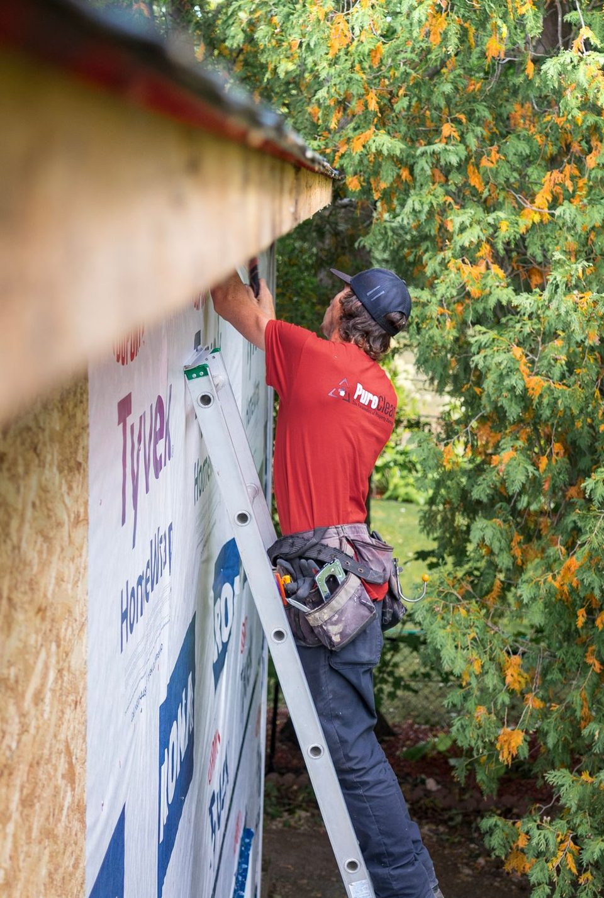
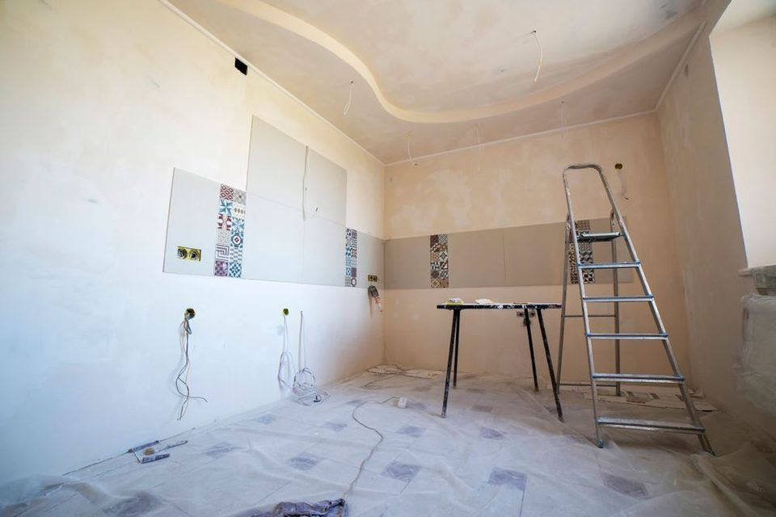

Three jobs our customers described in enough detail to write up. Every stage below comes from the customer's own Google review, and each record carries that review underneath it.
The photographs on this page are stock images that show the kind of work described. They are not photographs of these customers' homes, and each one says so. Real project photographs will replace them.
Project 01 Sliding door replaced, two months ago
A slider out, a glazed French pair in, same opening and same day.
The problem
An old two-panel sliding door between the house and the garden. The customer wanted it gone.
What we found
A single opening that had to take a completely different door, so the frame and the fixings had to change with it.
Work completed
Removed the slider, fitted a French door in the same opening, and put up lights while on site.
Result
Finished the same day. The customer called the price reasonable and the work trustworthy.
100% recommended. Trustworthy, reasonable price and very responsible. So happy with the work that he done in my house. 😊 Removed my old sliding door and replaced with French door and put some lights up.
Sonia AgostoGoogle review, 5 reviews, 9 photos
A glazed French pair, the usual replacement for a worn slider
Representative photo, not this customer's home
Project 02 Water intrusion, a year ago
Two years of storm water, and rounds of inspections that found nothing.
The problem
A two-year-old new build. Every year, hurricane winds drove water into the house through the joints on the outside.
What we found
Years of inspections had not located it, because the leak only appears in wind-driven rain. The path mattered, not the stain.
Work completed
Traced the route the water was actually taking and repaired it, keeping the customer informed throughout.
Result
The problem stopped. The customer recommends the service without qualification.
Rickey did an awesome job repairing our home. We have a new build, 2 years after hurricane winds blew water into our home from the joints outside of the house every year! After years of inspections and such- Rickey fixed the problem. He did a great job and stayed in constant communication! We definitely recommend his services!
Marsha JeffersonGoogle review, 9 reviews

Exterior joints, the usual route for wind-driven water
Representative photo, not this customer's home
Project 03 Reconfiguration, a year ago
Two trades on one site, and a reconfiguration that was not straightforward.
The problem
A job that needed cooperation with another vendor, and a layout change the customer described as tricky.
What we found
Not a like-for-like swap. The reconfiguration had to be worked out rather than simply installed.
Work completed
Coordinated with the other vendor, carried out the reconfiguration, and stayed until the job was finished.
Result
Showed up when promised, cleaned up completely, and charged a fair price.
Rick showed up when he said he would, stayed until the job was done, clean up completely and charged a fair price. The job required cooperation with another vendor and required a reconfiguration element that was tricky. I appreciated R&R
N RoeGoogle review, 4 reviews

A room mid-reconfiguration
Representative photo, not this customer's home
Three of 24 reviews described their job in enough detail to record. The other twenty-one are just as real, and mostly say “great work, fair price” and leave it there. All of them are on the reviews page.
Got one that nobody has solved yet?
Those are the ones worth calling about. Tell us what it does, when it does it, and what has already been tried.